Casebase Vignette
Sahir R. Bhatnagar
r Sys.Date()
Load Required Packages
library(knitr)
library(data.table)
library(magrittr)
library(ggplot2)
library(survival)
library(casebase)
Introduction
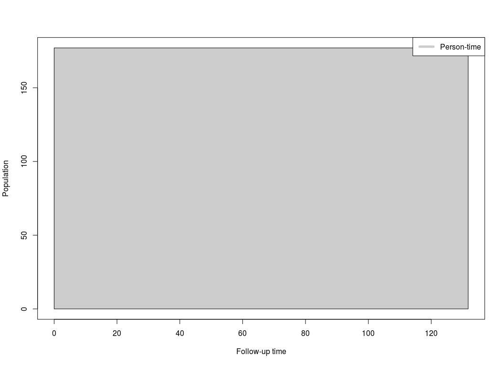
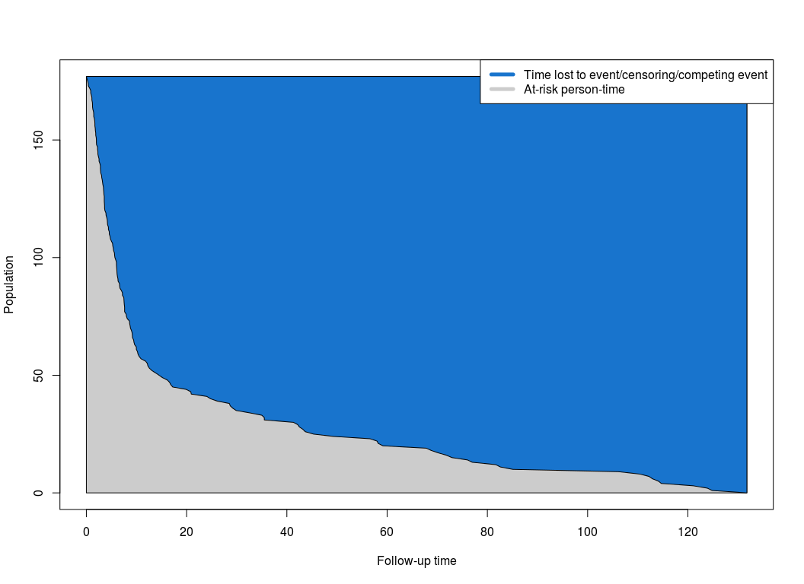
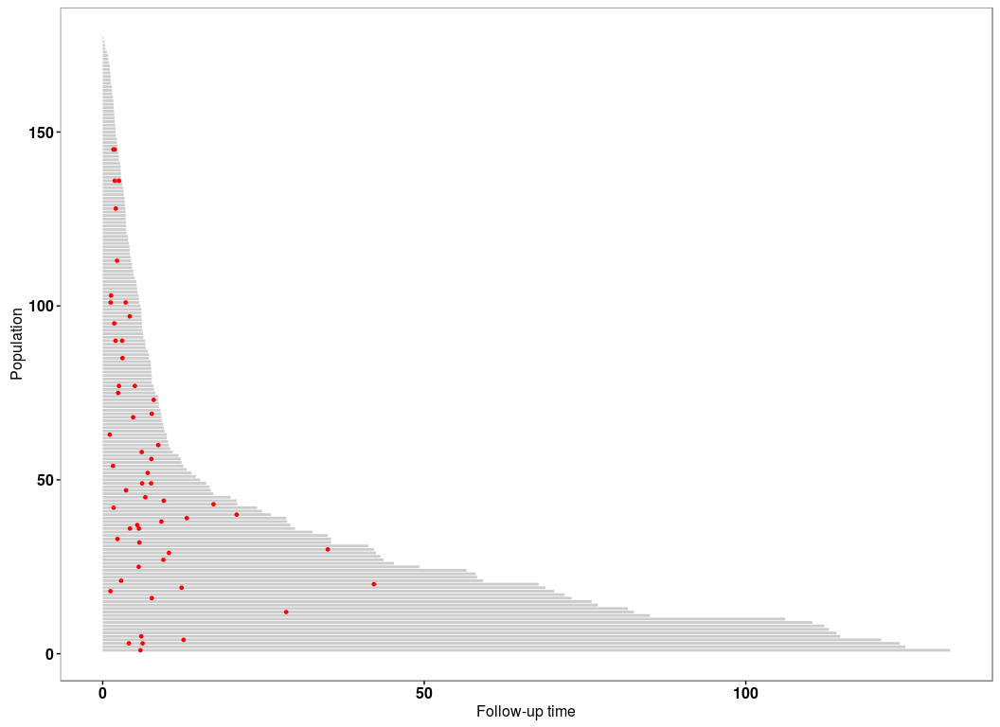
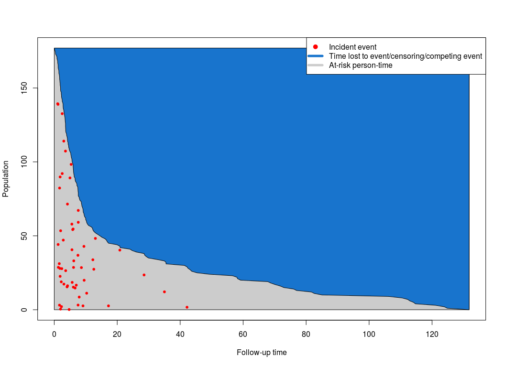
Sample Code
# set seed for reproducibility
set.seed(123456)
# read in the data. This is the data from 177 patients who received
# a stem cell transplant for acute leukemia. It is the same data show
# in Example 2 below
DT <- read.csv("https://raw.githubusercontent.com/sahirbhatnagar/casebase/master/inst/extdata/bmtcrr.csv")
# data structure
str(DT)
## 'data.frame': 177 obs. of 7 variables:
## $ Sex : Factor w/ 2 levels "F","M": 2 1 2 1 1 2 2 1 2 1 ...
## $ D : Factor w/ 2 levels "ALL","AML": 1 2 1 1 1 1 1 1 1 1 ...
## $ Phase : Factor w/ 4 levels "CR1","CR2","CR3",..: 4 2 3 2 2 4 1 1 1 4 ...
## $ Age : int 48 23 7 26 36 17 7 17 26 8 ...
## $ Status: int 2 1 0 2 2 2 0 2 0 1 ...
## $ Source: Factor w/ 2 levels "BM+PB","PB": 1 1 1 1 1 1 1 1 1 1 ...
## $ ftime : num 0.67 9.5 131.77 24.03 1.47 ...
# follow-up time
ftime <- DT$ftime
# get the indices of the individuals in order such that
# the ones with the shortest follow up time have a higher
# y-coordinate
ord <- order(ftime, decreasing = FALSE)
# We split the person-moments in four categories:
# 1) at-risk
# 2) main event
# 3) competing event
# 4) censored
yCoords <- cbind(competing = cumsum(DT[ord, "Status"] == 2),
event = cumsum(DT[ord, "Status"] == 1),
censored = cumsum(DT[ord, "Status"] == 0))
yCoords <- cbind(yCoords, atRisk = nobs - rowSums(yCoords))
head(yCoords, n = 20)
## competing event censored atRisk
## [1,] 1 0 0 176
## [2,] 2 0 0 175
## [3,] 3 0 0 174
## [4,] 4 0 0 173
## [5,] 5 0 0 172
## [6,] 6 0 0 171
## [7,] 7 0 0 170
## [8,] 8 0 0 169
## [9,] 9 0 0 168
## [10,] 9 1 0 167
## [11,] 9 2 0 166
## [12,] 9 3 0 165
## [13,] 10 3 0 164
## [14,] 10 4 0 163
## [15,] 11 4 0 162
## [16,] 12 4 0 161
## [17,] 13 4 0 160
## [18,] 13 5 0 159
## [19,] 13 6 0 158
## [20,] 14 6 0 157
# Plot only at-risk
plot(0, type='n', xlim=c(0, max(ftime)), ylim=c(0, nobs),
xlab='Follow-up time', ylab='Population')
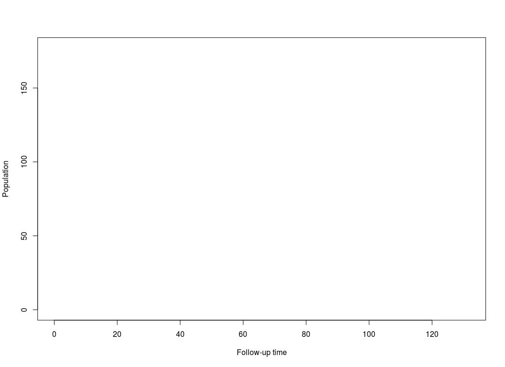
polygon(c(0, 0, ftime[ord], max(ftime), 0),
c(0, nobs, yCoords[,"atRisk"], 0, 0), col = "grey90")

cases <- DT[, "Status"] == 1
# randomly move the cases vertically
moved_cases <- yCoords[cases[ord], 4] * runif(sum(cases))
# only plot cases as red dots in proper order on the x-axis
# but randomly on the y-axis from available risk set
points((ftime[ord])[cases[ord]], moved_cases, pch=20, col="red", cex=1)
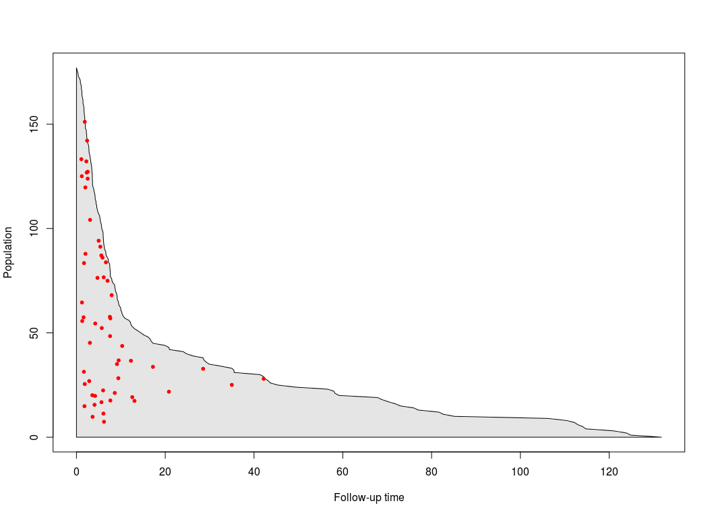
1. Veteran Data
# veteran data in library(survival)
data("veteran")
str(veteran)
## 'data.frame': 137 obs. of 8 variables:
## $ trt : num 1 1 1 1 1 1 1 1 1 1 ...
## $ celltype: Factor w/ 4 levels "squamous","smallcell",..: 1 1 1 1 1 1 1 1 1 1 ...
## $ time : num 72 411 228 126 118 10 82 110 314 100 ...
## $ status : num 1 1 1 1 1 1 1 1 1 0 ...
## $ karno : num 60 70 60 60 70 20 40 80 50 70 ...
## $ diagtime: num 7 5 3 9 11 5 10 29 18 6 ...
## $ age : num 69 64 38 63 65 49 69 68 43 70 ...
## $ prior : num 0 10 0 10 10 0 10 0 0 0 ...
# create 'popTime' object
popTimeData <- popTime(data = veteran)
## [1] 'time' will be used as the time variable
## [1] 'status' will be used as the event variable
## Sampling from all remaining individuals under study,
## regardless of event status
# object of class 'popTime'
class(popTimeData)
## [1] "popTime" "data.table" "data.frame"
# plot method for objects of class 'popTime'
plot(popTimeData)
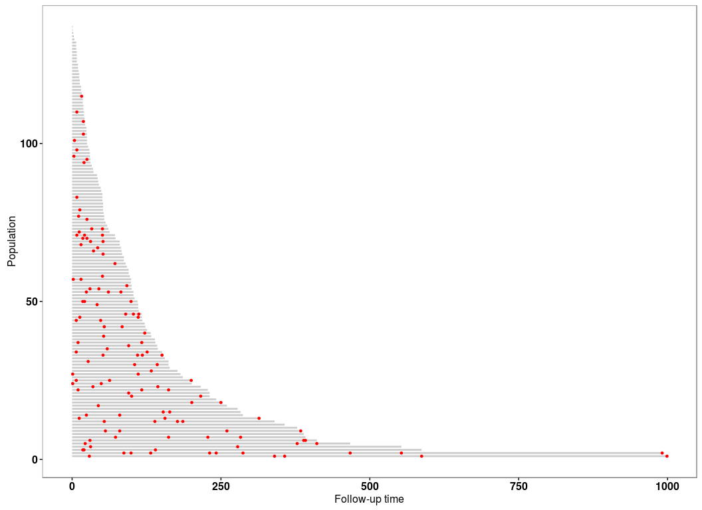
Stratified by treatment population time plot
# stratified by treatment population time plot
veteran <- transform(veteran, trt = factor(trt, levels = 1:2,
labels = c("standard", "test")))
# create 'popTimeExposure' object
popTimeData <- popTime(data = veteran, exposure = "trt")
## [1] 'time' will be used as the time variable
## [1] 'status' will be used as the event variable
## Sampling from all remaining individuals under study,
## regardless of event status
## Sampling from all remaining individuals under study,
## regardless of event status
# object of class 'popTimeExposure'
class(popTimeData)
## [1] "popTimeExposure" "list"
# plot method for objects of class 'popTimeExposure'
plot(popTimeData)
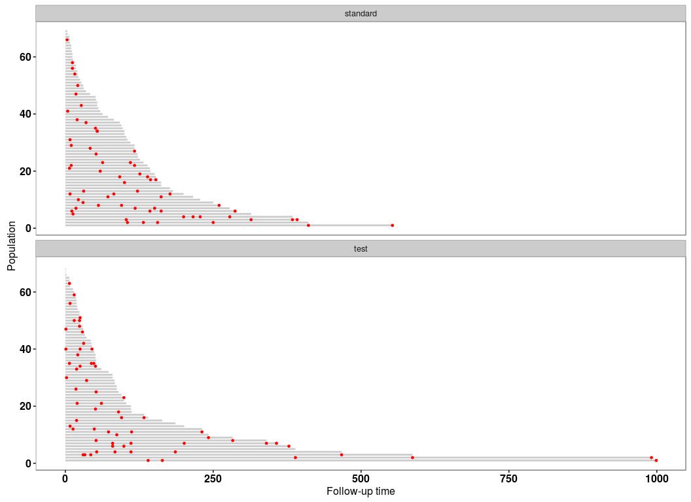
2. Stem Cell Data
bmt <- read.csv("https://raw.githubusercontent.com/sahirbhatnagar/casebase/master/inst/extdata/bmtcrr.csv")
str(bmt)
## 'data.frame': 177 obs. of 7 variables:
## $ Sex : Factor w/ 2 levels "F","M": 2 1 2 1 1 2 2 1 2 1 ...
## $ D : Factor w/ 2 levels "ALL","AML": 1 2 1 1 1 1 1 1 1 1 ...
## $ Phase : Factor w/ 4 levels "CR1","CR2","CR3",..: 4 2 3 2 2 4 1 1 1 4 ...
## $ Age : int 48 23 7 26 36 17 7 17 26 8 ...
## $ Status: int 2 1 0 2 2 2 0 2 0 1 ...
## $ Source: Factor w/ 2 levels "BM+PB","PB": 1 1 1 1 1 1 1 1 1 1 ...
## $ ftime : num 0.67 9.5 131.77 24.03 1.47 ...
# create 'popTime' object
popTimeData <- popTime(data = bmt, time = "ftime")
## [1] 'Status' will be used as the event variable
## Sampling from all remaining individuals under study,
## regardless of event status
# object of class 'popTime'
class(popTimeData)
## [1] "popTime" "data.table" "data.frame"
# plot method for objects of class 'popTime'
plot(popTimeData)

Stratified by Disease
# stratified by Disease population time plot
# Disease (lymphoblastic or myeloblastic leukemia,
# abbreviated as ALL and AML, respectively)
# create 'popTimeExposure' object
popTimeData <- popTime(data = bmt, time = "ftime", exposure = "D")
## [1] 'Status' will be used as the event variable
## Sampling from all remaining individuals under study,
## regardless of event status
## Sampling from all remaining individuals under study,
## regardless of event status
# object of class 'popTimeExposure'
class(popTimeData)
## [1] "popTimeExposure" "list"
# plot method for objects of class 'popTimeExposure'
plot(popTimeData)

# stratify by gender
popTimeData <- popTime(data = bmt, time = "ftime", exposure = "Sex")
## [1] 'Status' will be used as the event variable
## Sampling from all remaining individuals under study,
## regardless of event status
## Sampling from all remaining individuals under study,
## regardless of event status
plot(popTimeData)

3. Stanford Heart Transplant Data
# data from library(survival)
data("heart")
str(heart)
## 'data.frame': 172 obs. of 8 variables:
## $ start : num 0 0 0 1 0 36 0 0 0 51 ...
## $ stop : num 50 6 1 16 36 39 18 3 51 675 ...
## $ event : num 1 1 0 1 0 1 1 1 0 1 ...
## $ age : num -17.16 3.84 6.3 6.3 -7.74 ...
## $ year : num 0.123 0.255 0.266 0.266 0.49 ...
## $ surgery : num 0 0 0 0 0 0 0 0 0 0 ...
## $ transplant: Factor w/ 2 levels "0","1": 1 1 1 2 1 2 1 1 1 2 ...
## $ id : num 1 2 3 3 4 4 5 6 7 7 ...
# create time variable for time in study
heart <- transform(heart,
time = stop - start,
transplant = factor(transplant,
labels = c("no transplant", "transplant")))
# stratify by transplant indicator
popTimeData <- popTime(data = heart, exposure = "transplant")
## [1] 'time' will be used as the time variable
## [1] 'event' will be used as the event variable
## Sampling from all remaining individuals under study,
## regardless of event status
## Sampling only from individuals who never experienced
## the event of interest
# can specify a legend
plot(popTimeData, legend = TRUE)
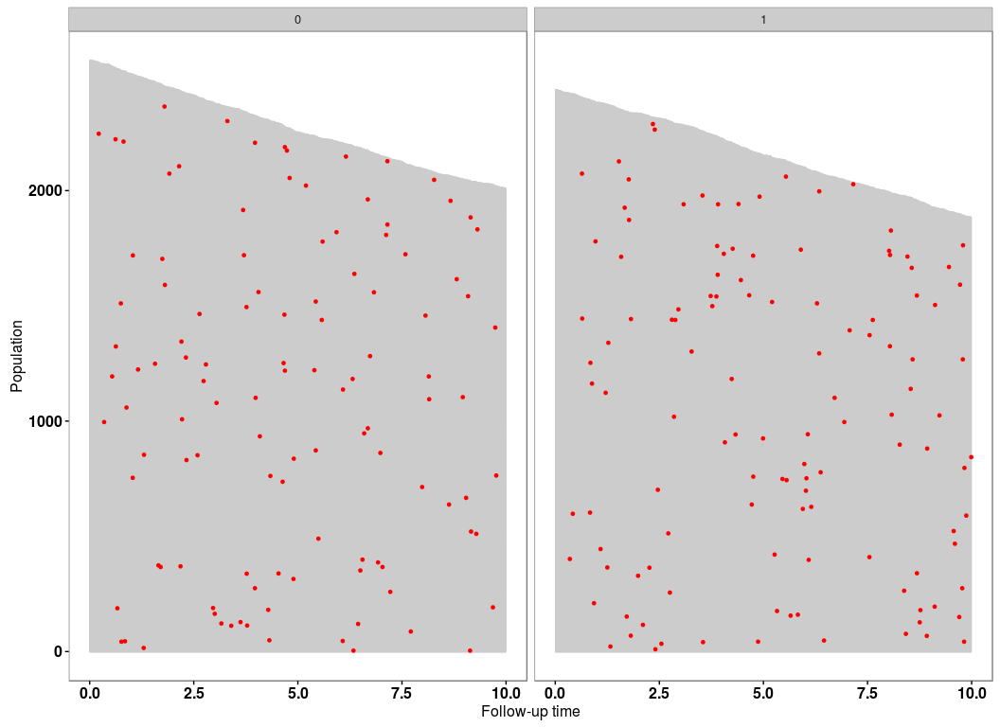
4. NCCTG Lung Cancer Data
# data from library(survival)
data("cancer")
str(cancer)
## 'data.frame': 228 obs. of 10 variables:
## $ inst : num 3 3 3 5 1 12 7 11 1 7 ...
## $ time : num 306 455 1010 210 883 ...
## $ status : num 2 2 1 2 2 1 2 2 2 2 ...
## $ age : num 74 68 56 57 60 74 68 71 53 61 ...
## $ sex : num 1 1 1 1 1 1 2 2 1 1 ...
## $ ph.ecog : num 1 0 0 1 0 1 2 2 1 2 ...
## $ ph.karno : num 90 90 90 90 100 50 70 60 70 70 ...
## $ pat.karno: num 100 90 90 60 90 80 60 80 80 70 ...
## $ meal.cal : num 1175 1225 NA 1150 NA ...
## $ wt.loss : num NA 15 15 11 0 0 10 1 16 34 ...
# since the event indicator 'status' is numeric, it must have
# 0 for censored and 1 for event
cancer <- transform(cancer,
status = status - 1,
sex = factor(sex, levels = 1:2,
labels = c("Male", "Female")))
# population time plot
# redistributing the red points among those who never experienced an event
# because there are enough available at each time point
popTimeData <- popTime(data = cancer)
## [1] 'time' will be used as the time variable
## [1] 'status' will be used as the event variable
## Sampling only from individuals who never experienced
## the event of interest
plot(popTimeData)
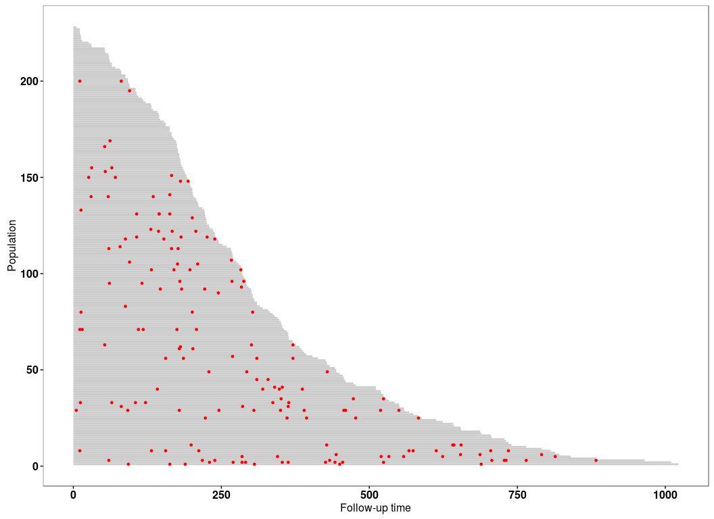
Stratified by gender
popTimeData <- popTime(data = cancer, exposure = "sex")
## [1] 'time' will be used as the time variable
## [1] 'status' will be used as the event variable
## Sampling only from individuals who never experienced
## the event of interest
## Sampling from all remaining individuals under study,
## regardless of event status
# can change the plot aesthetics
plot(popTimeData,
line.width = 0.2, line.colour = "black",
point.size = 1, point.colour = "cyan")
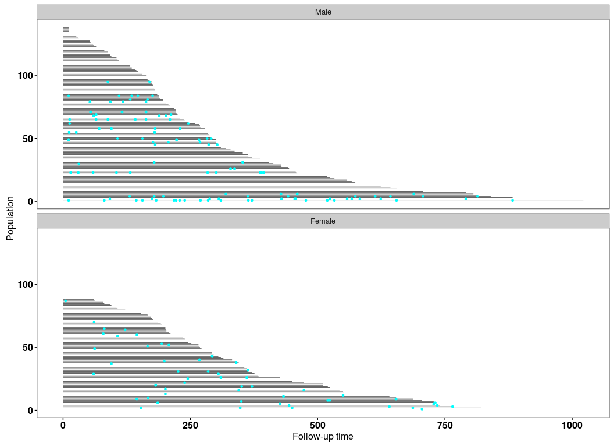
5. Simulated Data Example
Simulate the data
set.seed(1)
nobs <- 5000
# simulation parameters
a1 <- 1.0
b1 <- 200
a2 <- 1.0
b2 <- 50
c1 <- 0.0
c2 <- 0.0
# end of study time
eost <- 10
# e event type 0-censored, 1-event of interest, 2-competing event
# t observed time/endpoint
# z is a binary covariate
DTsim <- data.table(ID = seq_len(nobs), z=rbinom(nobs, 1, 0.5))
setkey(DTsim, ID)
DTsim[,`:=` (event_time = rweibull(nobs, a1, b1 * exp(z * c1)^(-1/a1)),
competing_time = rweibull(nobs, a2, b2 * exp(z * c2)^(-1/a2)),
end_of_study_time = eost)]
DTsim[,`:=`(event = 1 * (event_time < competing_time) +
2 * (event_time >= competing_time),
time = pmin(event_time, competing_time))]
DTsim[time >= end_of_study_time, event := 0]
DTsim[time >= end_of_study_time, time:=end_of_study_time]
Population Time Plot
# create 'popTime' object
popTimeData <- popTime(data = DTsim, time = "time", event = "event")
## Sampling from all remaining individuals under study,
## regardless of event status
plot(popTimeData)

Stratified by Binary Covariate z
# stratified by binary covariate z
popTimeData <- popTime(data = DTsim, time = "time", event = "event", exposure = "z")
## Sampling from all remaining individuals under study,
## regardless of event status
## Sampling from all remaining individuals under study,
## regardless of event status
# we can line up the plots side-by-side instead of one on top of the other
plot(popTimeData, ncol = 2)